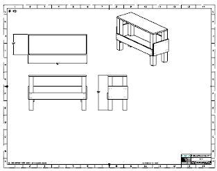
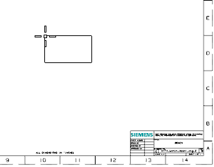
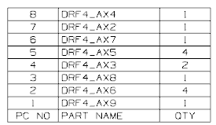
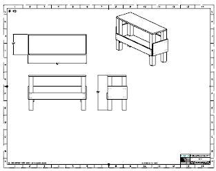
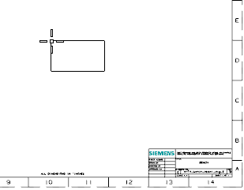
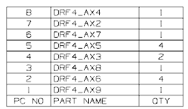

将零件明细表添加到图纸中
-
打开 drf4_bench_assm1_dwg_2。

图纸页“Sheet 1” 工作 -
在表工具条上的表下拉菜单中，选择零件明细表
 。
。 -
将零件明细表拖动到 D10区，然后单击以放置它。

零件明细表将出现在图纸页中，其中显示三列 PC NO、PART NAME 以及QTY。

打开 drf4_bench_assm1_dwg_2。

图纸页“Sheet 1” 工作
在表工具条上的表下拉菜单中，选择零件明细表  。
。
将零件明细表拖动到 D10区，然后单击以放置它。

零件明细表将出现在图纸页中，其中显示三列 PC NO、PART NAME 以及QTY。
